A very late update after the new year! Went on a walk nearby, with very lovely rocks and greenery. Was a little bit scared of heights for the last part and the path was rough so we turned back. Very lovely walk and a very lovely stream at the end which I did not swim in.
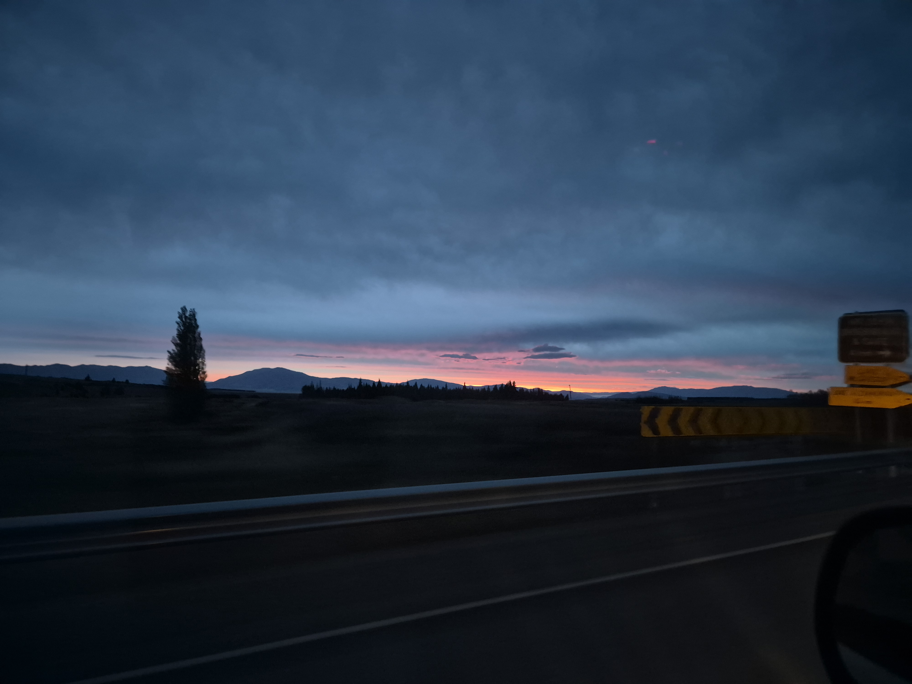
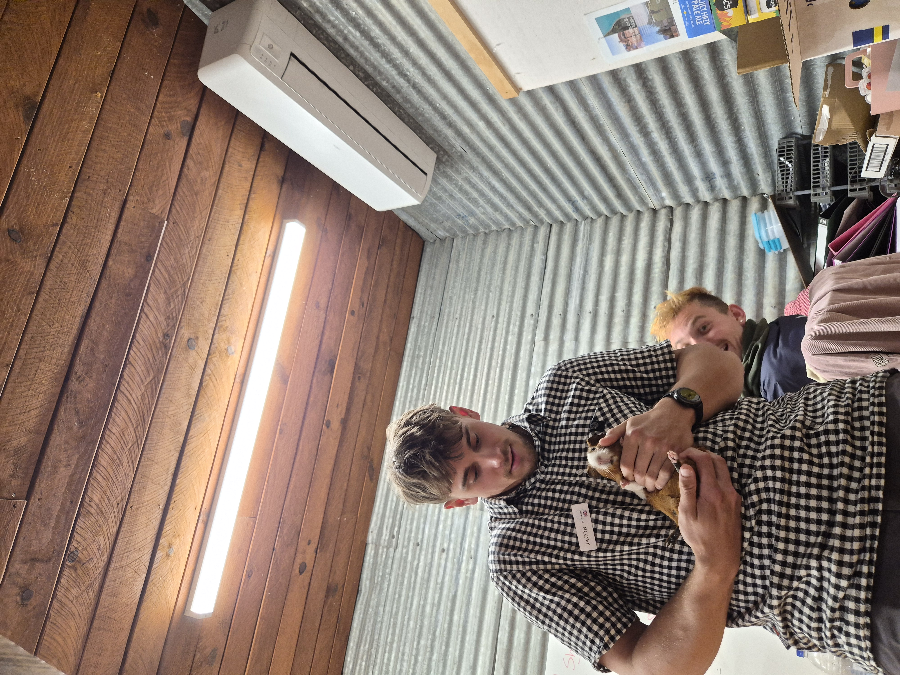
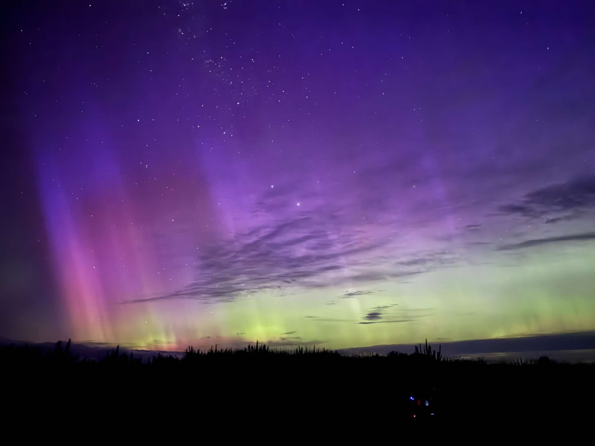
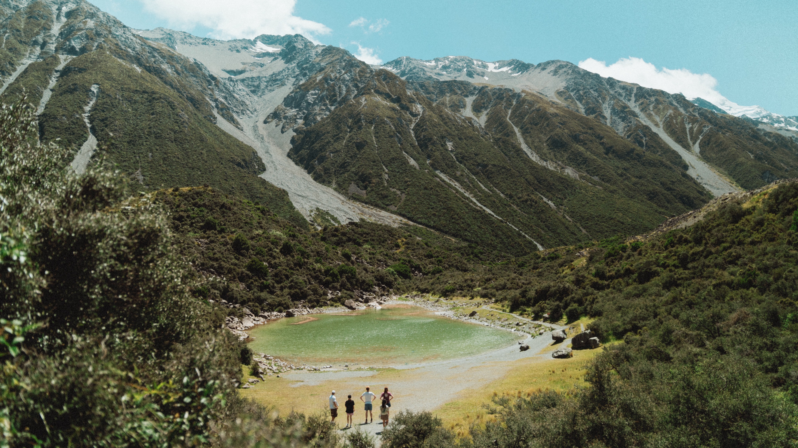
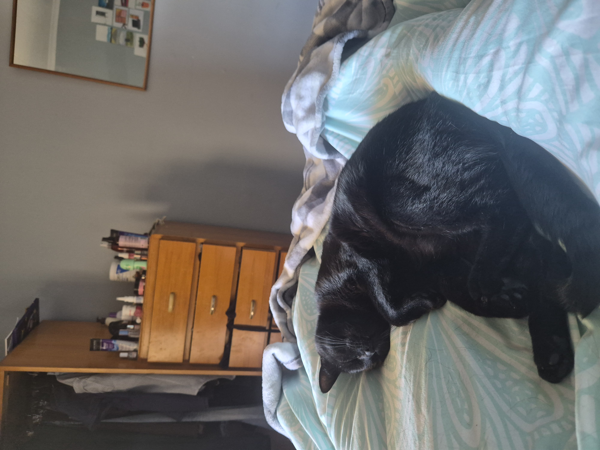
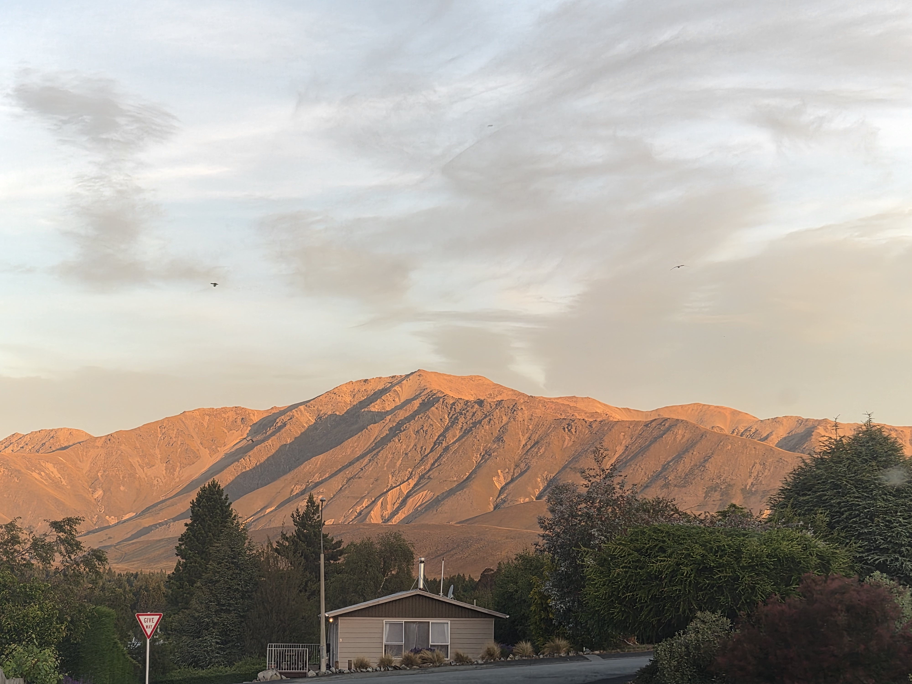
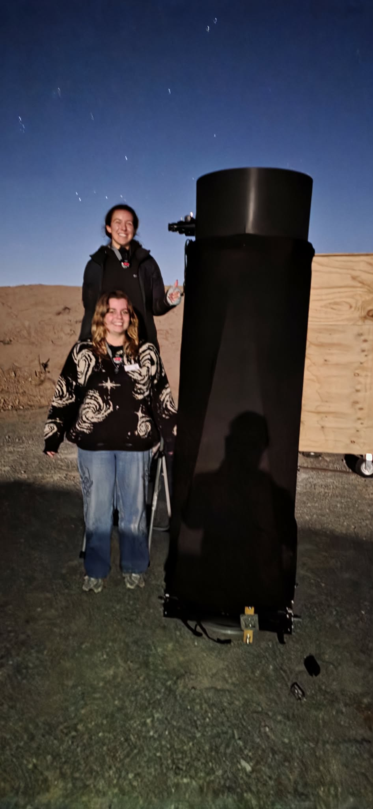
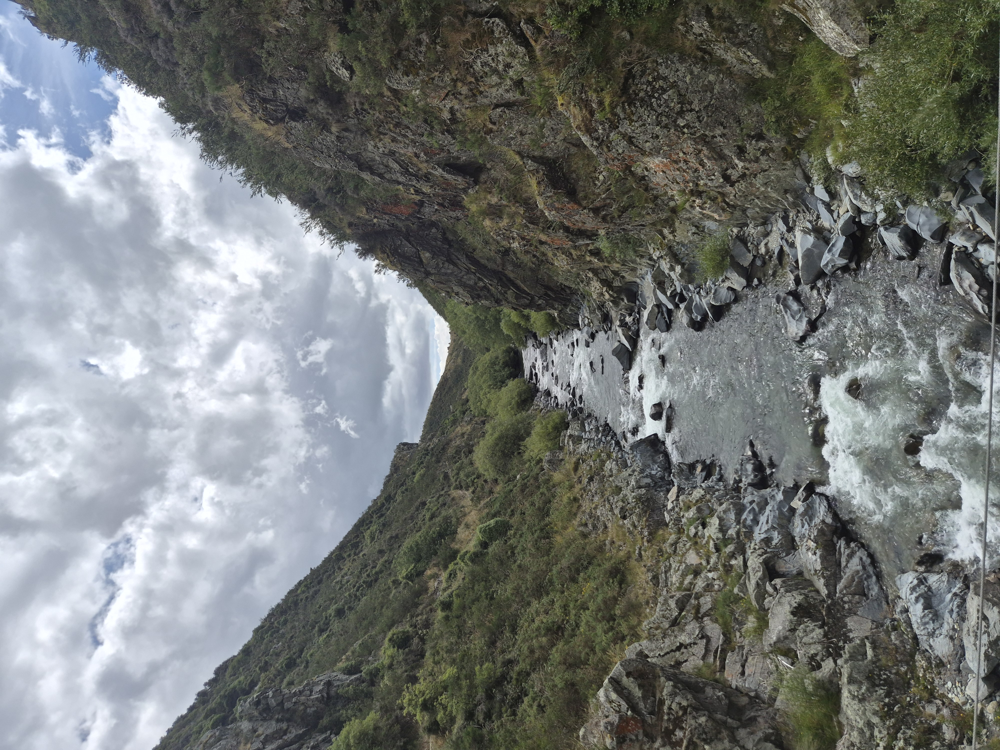
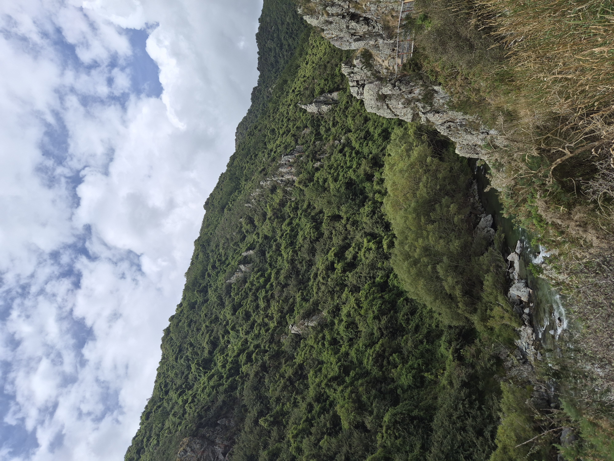
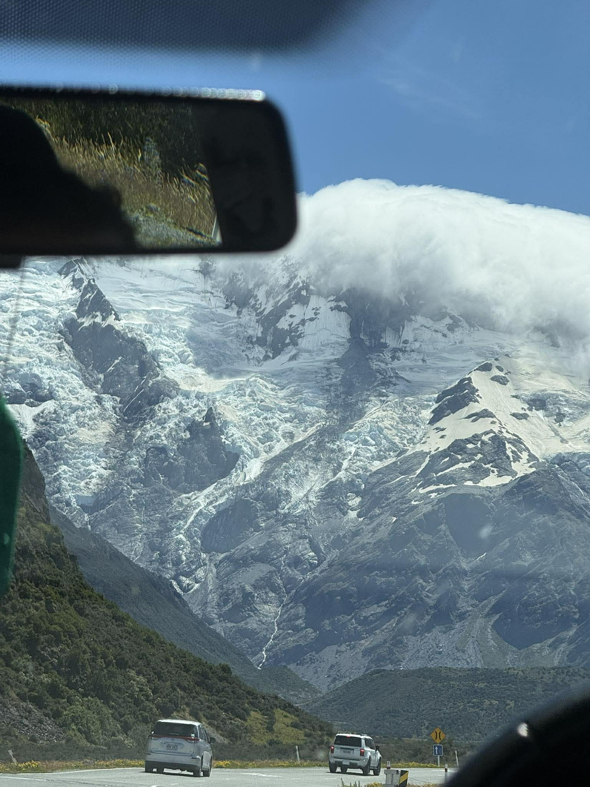
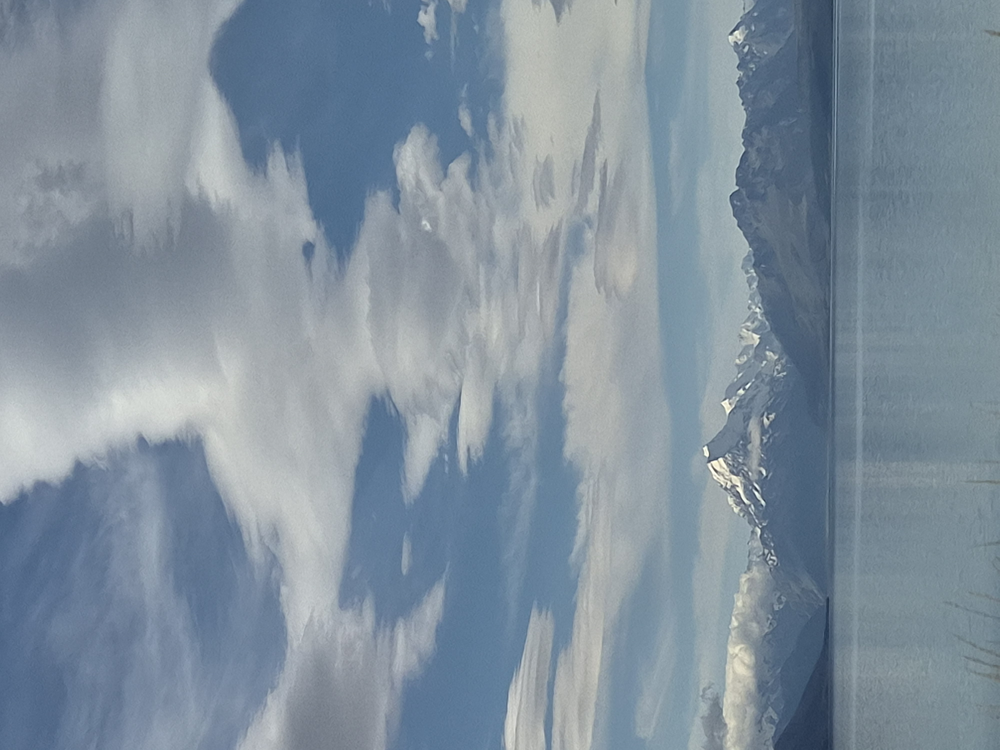
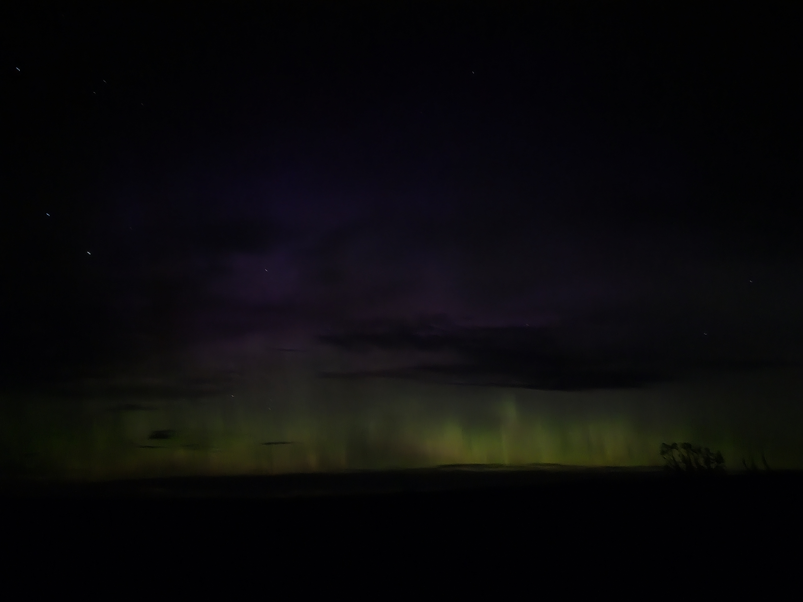
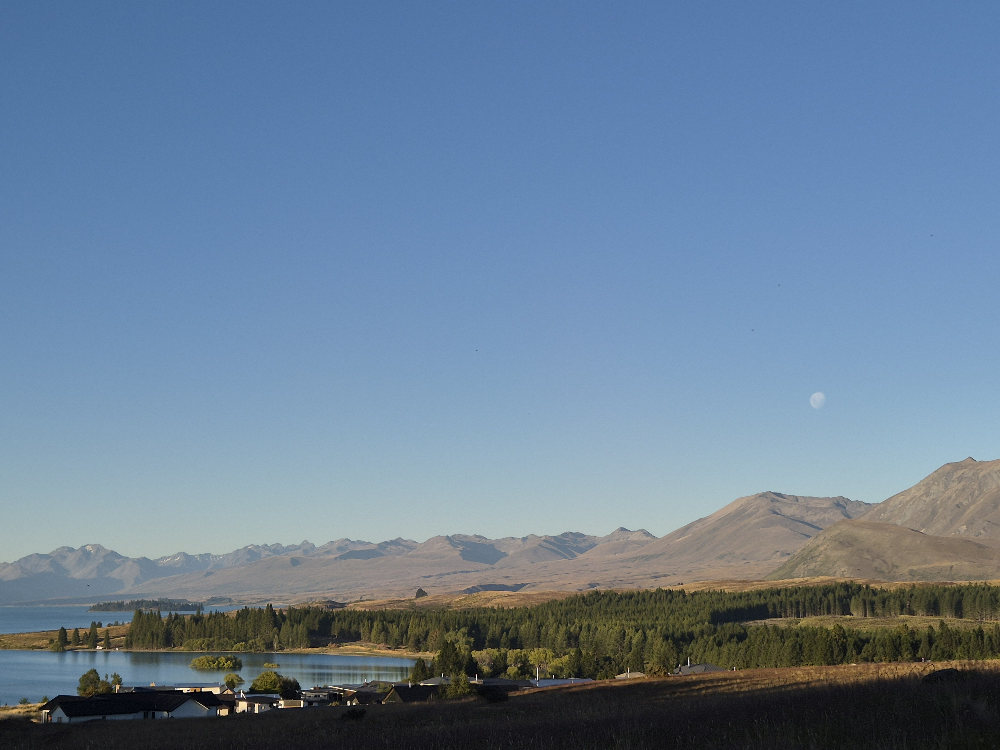
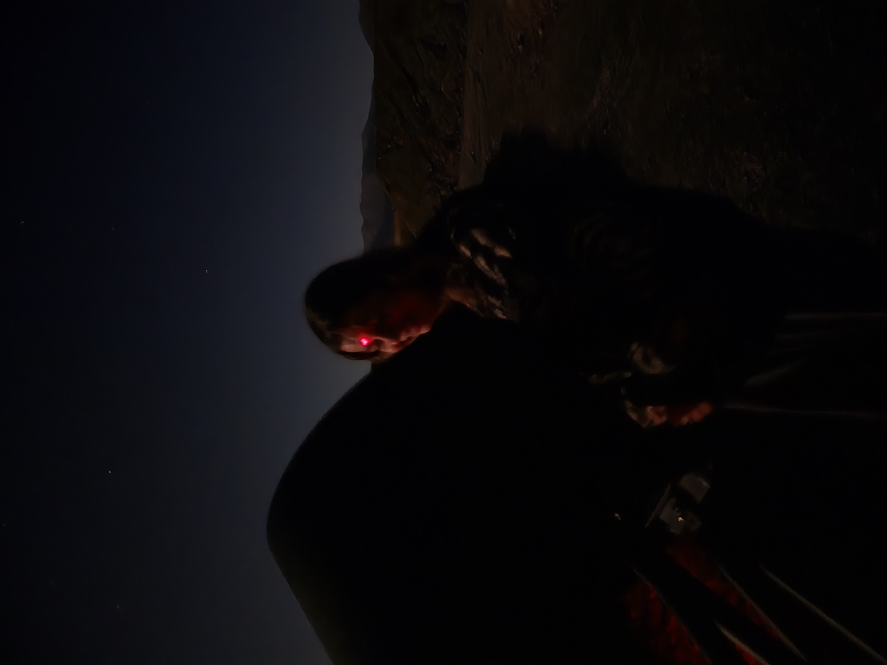
Drove to the nearest beach for some shopping and food, as well as a trip to the fair they had on. Went on one ride, and everyone felt sick so we had to go home. I drove a car back with lots of sleeping passengers, which was fine as I then get to listen to my own music. Sometimes we need the Guinea Pigs in the offic for emotional support.
Crazy huge arora, apparently the biggest one since 2003. Was on my tour and I had to stop and just watch it because I couldn't concentrate on the stars when half the sky was green and dancing. You can see my picture compared with my managers picture - guess whose is whose lol. But in person it didn't look like either of those, it was green and it looked a bit like a giant crown to me.
Little group trip to Mount Cook, got some lovely photos - none of which I took myself. Also a very sweet cat that I woke up to. He reminded me of Chelasea like this so I didn't get up for another hour.
Setting up a giant telescope for another tour. I am stood on some steps in this photo and I'm still not taller than it. Photo is taken at night time but with the full moon - which is why it looks super light. We had to collimate the telescope - align the mirrors with a laser - so we had a little bit of fun with the laser (Don't worry this laser is not a blinding one I don't think).
And finally just some nice pictures